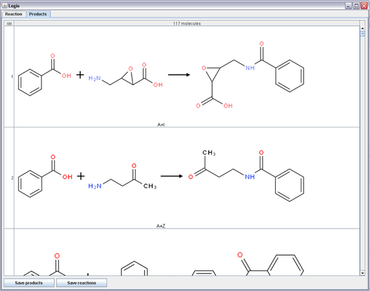
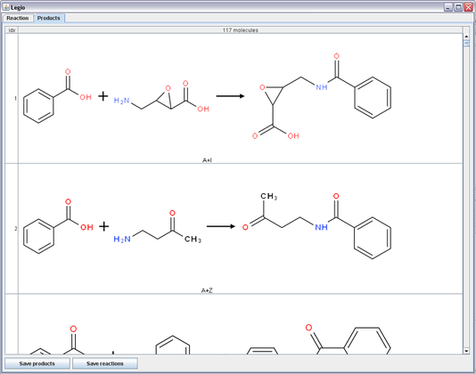
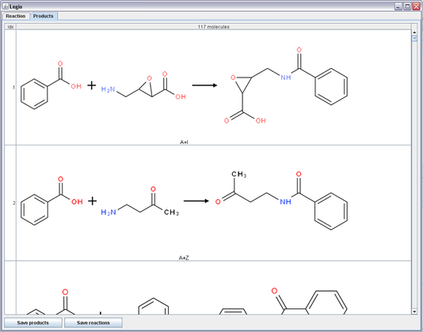

Legio is an Indigo-based GUI application that exposes the combinatorial chemistry capabilities of Indigo.

If no options are specified, all reactions are performed in the “plate” mode. This mode is also called the “grid mode”. It models the microtiter plate, where every well of the plate contains exactly one monomer from each group. When the reaction has two reactants, the reaction matrix is a simple 2D table (square). When there are three reactants, the matrix is a 3D table (cube), and so on.
When the “all reactions” flag is specified, the reaction can be repeated with reaction products as monomers, but only within one well. Monomers and products from different wells are independent and are never mixed.
With the enabled “one tube” option all monomers are placed into one reaction vessel, and monomers from the same list of monomers can react.
Additionally, the “self reactions” option enables intramolecular reactions, where one molecule of monomers can play the role of two (or more) reactants.
Legio is written in Java and supports Linux and Windows operating systems, both 32-bit and 64-bit versions of each system. Mac OS X 10.5 and 10.6 are supported as well. Legio depends on (and is based on) the Indigo library. The binaries of Indigo for all supported systems are included in the distribution.
Look at the Downloads page for the package suitable for your system. For Windows, an installer executable is provided. On Linux and Mac OS X, you just need to unpack the provided zipfile and run the following command:
/path/to/legio-1.0-xxxx/legio
You can also put the symlink in /usr/local/bin:
sudo ln -s /path/to/legio-1.0-xxxx/legio /usr/local/bin
and then you will be able to run Legio by typing legio in the command line.
Copyright © 2010 GGA Software Services LLC
This program is free software: You can redistribute it and/or modify it under the terms of the GNU General Public License as published by the Free Software Foundation; version 3 of the License.
This program is distributed in the hope that it will be useful, but WITHOUT ANY WARRANTY; without even the implied warranty of MERCHANTABILITY or FITNESS FOR A PARTICULAR PURPOSE. See the GNU General Public License for more details.
You should have received a copy of the GNU General Public License along with this program. If you did not, please see http://www.gnu.org/licenses/.
If the GPL-licensed Legio does not fit your needs, please contact us at info@ggasoftware.com to discuss the purchase of a commercial license. You may need the commercial license if you want to: